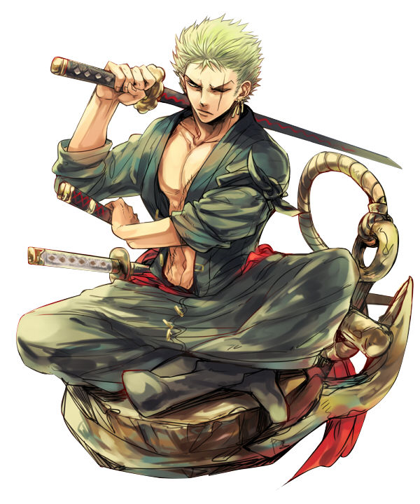

Quem é Roronoa Zoro
Roronoa Zoro, Caçador de Piratas, mestre espadachim, um dos 11 piratas que integram a chamada "Pior Geração", grande amigo de Luffy, responsável por algumas das melhores cenas de ação de One Piece e, com certeza, por algumas dos melhores momentos cômicos. Ao longo das 20 temporadas do anime, Zoro ganhou o coração dos fãs dos Piratas do Chapéu de Palha .
Primeira Aparição
Conhecemos Zoro já no começo do anime, como um criminoso prisioneiro dos fuzileiros navais, enquanto ele aguardava sua execução. Após ser salvo por Luffy, contudo, ele decide aceitar o convite do pirata para integrar sua tripulação, sendo o primeiro membro do grupo formado pelo Pirata do Chapéu de Palha.

Desde então, Zoro chegou a ser confundido como o verdadeiro capitão da tripulação, dada sua força, suas habilidades com suas três espadas e seu jeito mais sério. Ele, Luffy, Sanji e Jinbe são considerados os quatro melhores lutadores da equipe, o que apenas destaca seus esforços para um dia se tornar o maior espadachim do mundo.